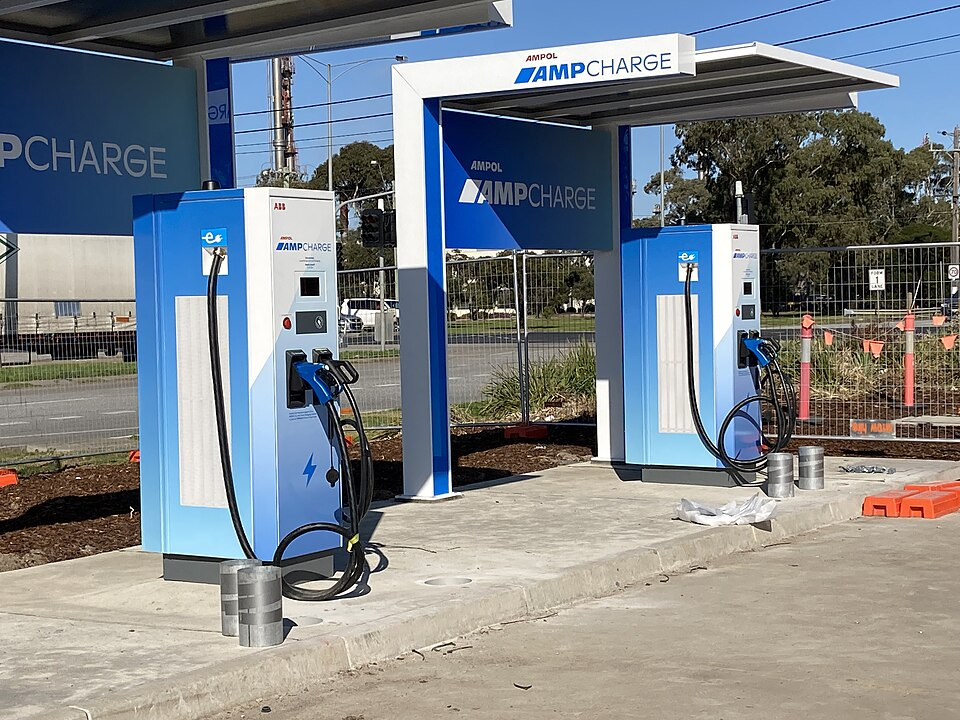

Module A: Quantum Optimization
An important part of smart city design is sustainable urban design, and a key part of sustainable urban design is the use of environmentally friendly vehicles. In particular, with the rise of Electrtric Vehicles (EVs) on the road, there is a growing need for an efficient and accessible network of EV charging stations. This might seem like an easy problem, though the challenge lies in determining the optimal locations for these charging stations in a city or region to maximize coverage while minimizing installation and operational costs. This problem is crucial for promoting the adoption of EVs into city design, and ensuring that drivers can access charging stations without inconvenient detours.
In mathematics, we call this sort of problem an optimization problem. It turns out that quantum computing can help with solving optimization problems like this! In this task, you will learn how the Quantum Approximate Optimization Algorithm (QAOA) to solve the problem of determining the best placement of EV charging station. You will be tasked with designing an approach that finds an optimal distribution of charging stations that balances factors like the number of vehicles, distance to stations, and available infrastructure. The challenge outline is as follows.

About the Image: The image on this page is of an EV charging station in Altona North, Victoria, Australia. The original image can be found here and is used under the Creative Commons Attribution-Share Alike 4.0 International license.